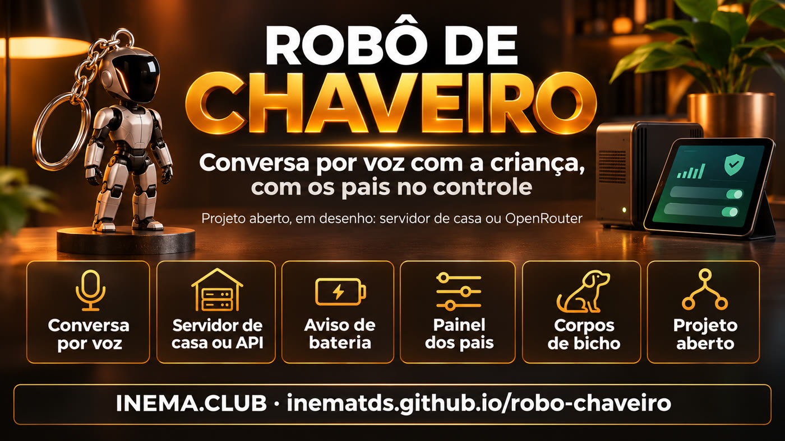
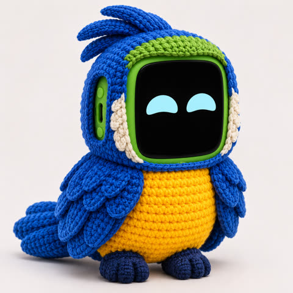
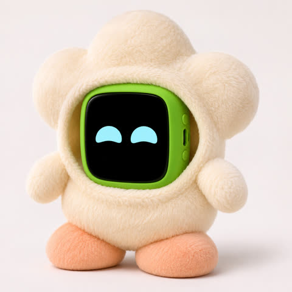

Seu filho leva no bolso um robozinho que conversa com ele, e você decide quando e sobre o quê
Você quer que a criança converse com uma IA sem entregar o celular na mão dela, e sem perder o controle do que ela ouve. O Robô Chaveiro é uma plaquinha de R$ 132 (sem frete) com tela e voz, do tamanho de um chaveiro, que responde falando. O desenho prevê que os pais escolham o nome, a voz, os horários e o tempo por dia. Hoje é só projeto: a placa ainda não chegou.
Arte ilustrativa. A placa ainda não chegou: nada foi gravado nela.
Em resumo
Este é um projeto aberto para transformar uma plaquinha com tela de 1,54" numa espécie de bichinho de bolso que conversa por voz: a criança segura um botão, fala, e ele responde em voz alta, com um rosto de olhos grandes na tela. Ele "pensa" de um de três jeitos: pelo computador de casa, direto num serviço de IA na internet (OpenRouter), ou pelo computador de casa repassando para esse serviço. Os pais vão configurar tudo pelo celular. Hoje existe o projeto no papel e o servidor de casa, que já funciona num projeto irmão; a placa e o programa dela ainda não.

Arte ilustrativa: o bonequinho metálico é enfeite. O chaveiro de verdade é a plaquinha quadrada verde, com a tela de rosto, da imagem de cima.
Vídeo
Entenda em 2 minutos
O corpo de R$ 132, onde a IA mora e o que os pais vão poder decidir pelo celular.
Uma plaquinha de chaveiro não entende fala nem pensa a resposta sozinha: isso pede modelos grandes. Então ela é só o corpo: ouve, mostra o rosto e fala. O pensamento acontece fora dela.
🔑 O corpo, no bolso
Uma placa SpotPear com tela de 1,54", microfone, alto-falante, dois botões e capinha com furo para pendurar. A criança segura o botão, fala até 15 segundos e solta. Não tem câmera.
🧠 O cérebro, em casa ou na internet
Em casa, um programa no computador transforma a fala em texto, pede a resposta a uma IA (o Claude, pago por mensalidade, não por pergunta) e gera a voz ali mesmo. Longe de casa, o desenho prevê um serviço de IA pela internet (OpenRouter), que ainda não foi autorizado nem testado.
🔋 Avisa antes de apagar
Foi pensado para andar na bateria (se a versão de chaveiro vem com bateria, e de quanto, ainda não foi conferido). O desenho: quando ela for acabando, ele mostra olhos de sono, depois pede "me coloca para carregar" e, no fim, diz tchau e dorme. As frases ficam gravadas nele, para o aviso funcionar mesmo sem internet.
Seguro por desenho: argola ou mosquetão, nunca cordão no pescoço da criança sem fecho que se solta. Nenhuma peça pequena que saia. É regra do projeto que o robô não vai pedir nome completo, endereço nem escola. E, no servidor de casa, a IA roda sem nenhuma ferramenta: só escreve texto, não mexe em nada no computador.
O que existe hoje
O que está pronto e o que é só desenho
Situação em 15/11/2026. Sem promessa: só o que foi feito.
✓ Pronto (no projeto irmão)
O servidor de casa
O cérebro de casa é o do Robô CoreS3 Lite, já testado com gravações: até o primeiro som da resposta, de 6,8 a 7,6 s medidos, com os modelos carregados. O chaveiro vai usar esse mesmo servidor.
◐ Comprada, a caminho
A placa
SpotPear ESP32-S3 1,54", provavelmente o modelo "muma", comprada por R$ 132,14 em 15/11/2026. O modelo exato, a bateria e os pinos do som só serão confirmados com ela na mão.
○ Só no papel
Programa da placa, painel e aviso de bateria
O programa da placa, o painel dos pais, o aviso de bateria e o caminho pela internet estão desenhados, com critério de pronto para cada um. Nada disso foi escrito ainda.
Fábrica sem nuvem estranha: a placa vem com um programa de fábrica que manda a voz para um serviço de terceiros (XiaoZhi). Ele não será ativado: a voz de crianças não vai para fora sem decisão dos pais. O programa de fábrica pode voltar depois pelos arquivos da própria SpotPear.
Três cérebros
Em casa, direto na internet, ou os dois juntos
O mesmo chaveiro pode usar qualquer um. Só o servidor de casa existe hoje; os outros dois só entram com a autorização do dono do projeto para usar o serviço pago.
Pelo computador de casa
Direto pela internet (OpenRouter)
Casa repassa à internet
Onde funciona
no Wi-Fi de casa, com o computador ligado
em qualquer Wi-Fi, inclusive o do celular
onde o chaveiro alcançar o computador
Demora
6,8 a 7,6 s até o primeiro som, medido no projeto irmão
não medida
não medida
Custo
só a mensalidade do Claude e o PC ligado
pago por uso, com teto por dia
pago por uso
Senha do serviço pago guardada no chaveiro
nenhuma
uma só dele, com teto de gasto por dia; perdeu o chaveiro, é só desativar
nenhuma
Voz
gerada no computador de casa
a do serviço
a de casa ou a do serviço
Situação
existe (projeto irmão)
só desenho, nenhuma chamada feita
Pela documentação do OpenRouter, um turno inteiro cabe num único pedido: a gravação vai, e a resposta volta em pedaços de áudio e texto, que o chaveiro toca enquanto chegam. Quais modelos de voz estão lá hoje e quanto custam ainda não foi conferido.
Pais no controle
Você vai configurar pelo celular, e a criança vai saber que você vê
○ Só no papel Desenho de duas telas: a primeira configuração no próprio chaveiro e um painel da família no computador de casa, que abre no celular.
🏷️ Dar nome e jeito
Nome do chaveiro, apelido da criança (nunca o nome completo), faixa de idade, personalidade (brincalhão, calmo, curioso, professor), voz, cor dos olhos e volume máximo.
⏰ Limitar
Horários permitidos (fora deles: "agora é hora de descansar"), minutos por dia, botão "pausar agora", assuntos que os pais não querem e teto de gasto por dia quando usar o OpenRouter.
👀 Acompanhar
Histórico só em texto, com hora, e um resumo do dia. Guardado por nada, 1, 7 ou 30 dias, e apagado sozinho. Áudio desligado por padrão. Mais o nível da bateria e o último contato.
Sem acompanhar escondido: o chaveiro vai dizer à criança que os pais podem ver o que eles conversam. Sem localização: a placa não tem GPS e o painel não vai tentar descobrir onde ela está. Os dados ficam no computador da família; usando o OpenRouter, o texto também passa pelo serviço, e o painel vai avisar isso.
Ideia para depois
Corpos de bicho e boneco, com o chaveiro como rosto
O chaveiro encaixa num corpo e a tela vira a cara do personagem. As imagens são propostas desenhadas por IA (Codex), não produtos feitos. Fica para uma fase futura.
Capi-Bolso · capivara de pelúciaTatu-Casca · tatu de gomosPerereca Pingo · silicone

Arara Asa · crochê

Nuvim · nuvem macia, 3–6 anosTrilho · boneco de capuzOrbe Robô · berço impressoIpê Miúdo · madeira e feltro
Regras comuns: sem ímã, sem olho de plástico ou peça que solte, alto-falante e microfone com saída livre, botões e entrada de carga acessíveis, e o chaveiro sai do corpo para carregar. As propostas, com a pesquisa e os links, estão em ideias/corpos/PROPOSTAS.md.
Parte técnica
O kit: para quem quer montar o seu
Daqui para baixo é a parte técnica: a placa, o protocolo, os comandos e as fases. Você não precisa desta parte para entender o que está acima.
O que é
A placa, o servidor reaproveitado e os documentos
Tudo no repositório, em português: definição, plano por fases com critério de pronto e as ideias de corpo.
🟩 SpotPear ESP32-S3 1,54" (provável "muma")
ESP32-S3 com Wi-Fi 2,4 GHz, 16 MB de flash e 8 MB de PSRAM; tela de 240 × 240 (ST7789), toque só na versão "Touch"; microfone e alto-falante; botões liga e BOOT; carga por USB-C. Sem câmera. Dados da ficha e da wiki da SpotPear, ainda não conferidos na placa.
🖥️ Servidor do projeto irmão
O robo-cores3-lite, porta 8770, usado como está, com o cabeçalho X-Robo-Id: chaveiro-1. Este projeto não copia o código dele.
📄 Desenho completo
A DEFINICAO.md traz a placa (seção 2), os três cérebros (4), fora de casa (5), bateria (7), crianças (9), painel dos pais (13) e corpos (14).
Como funciona
Um turno de conversa pelo servidor de casa
Conversa meio a meio: ou ouve, ou fala. Igual ao projeto irmão, sem a foto.
Segura o BOOT→/v1/aquecer→Grava até 15 s→/v1/conversa→Whisper→Claude (claude -p) sem ferramentas→Chatterbox→Toca e mostra o rosto
Estados do rosto: pronto, ouvindo, pensando, falando; erro por 2 s e volta a pronto, sem reiniciar. No caminho pelo OpenRouter, o turno vira um pedido HTTPS com a gravação, e a resposta chega em pedaços de áudio (streaming).
Pré-requisitos
O que precisa ter
Para o cérebro de casa, os mesmos pré-requisitos do projeto irmão (Linux com placa de vídeo NVIDIA, inemavox, assinatura do Claude). Estão explicados no guia do Robô CoreS3 Lite.
A placa
SpotPear ESP32-S3 1,54" com capinha. Na primeira vez, ligar sem configurar o Wi-Fi do programa de fábrica.
arduino-cli
A ferramenta de linha de comando do Arduino, com o pacote esp32:esp32. Qual placa escolher no compilador ainda será definido com a placa na mão.
arduino-cli version
Guia de uso · passo a passo
O que dá para fazer hoje
Os passos 1 a 3 funcionam hoje, sem a placa. O passo 4 é o primeiro com ela. O programa da placa ainda não existe.
Crie a configuração: troque ROBO_TOKEN por um texto longo e aponte VOZ_REF para um WAV curto com a voz que o robô vai imitar. Os pré-requisitos (inemavox, ambiente Python, Claude Code) estão no guia do projeto irmão. Depois suba o servidor na porta 8770.
cd robo-cores3-lite
cp servidor/env.exemplo servidor/.env
nano servidor/.env # ROBO_TOKEN e VOZ_REFpython3 servidor/servidor.py
3
Testar o cérebro com uma gravação
Noutro terminal, na mesma pasta do passo 1, mande a gravação de teste. É o mesmo pedido que o chaveiro vai fazer.
cd robo-cores3-lite
python3 servidor/testar.py servidor/teste/pergunta.wav
4
Quando a placa chegar: ver se ela aparece
Ligue pelo cabo USB-C, sem ativar o programa de fábrica na nuvem. Uma porta nova deve aparecer.
arduino-cli board list
Roadmap
As fases, cada uma com critério de pronto
O plano completo, com o comando ou a medida que confere cada critério, está no PLANO.md.
F0
A placa chega e ligaEm andamento: comprada em 15/11/2026, ainda a caminho.
F1
Grava e envia ao servidorAchar no esquema os pinos do som e da bateria; segurar o BOOT para falar.
F2
Toca a respostaCinco perguntas seguidas, rosto de erro sem reiniciar, autonomia da bateria medida.
F2b
Aviso de bateriaTrês degraus calibrados pela descarga medida; funciona sem internet.
F2c
Configuração e painel dos paisNome, horários, minutos por dia, pausar, histórico em texto. O painel pode começar antes da placa.
F3
Chaveiro de verdadeArgola, capinha, persona de criança testada com 10 perguntas.
F3b
Cérebro pela internet (OpenRouter)Só depois da autorização do serviço e da finalidade.
F4
OpcionaisCorpos de bicho, troca automática de cérebro, frases de espera, palavra de ativação.